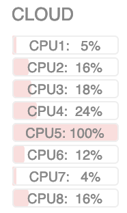

29. August 2019
Added several genomes and the possibility to perform differential gene expression analysis. Working on the gene expression profile graphs.
Data upload is here! 1 library with up to 4 experiments (max 100 MB each) is available automatically (up to further notice). Scientists and researchers: please simply write us if you need more space for your data.
25. March 2019
We are using Slack to provide support and feedback for expressRNA analysis, you can join our channel by invite, simply write an e-mail and let us know you would like to join.
22. February 2019

The expressRNA project is moving forward to provide automatic data processing.
We plan to open test experiment data upload by end of February 2019. In this first stage, users will be able to upload experiments (FASTQ/FASTA) files and expressRNA will compute the polyA database, polyA expression profiles from the experimental data and additional global gene expression levels.
In terms of infrastructure, we are using a cloud server with 8-core CPU and 64 GB RAM, with enough disk space for this initial test of the data upload (scroll down to see live server CPU usage, CLOUD).
If you are logged into the system, you can notice an updated profile section, where you can see currently processed tasks / tickets.
16. January 2019
Several updates to the web interface, including user data upload and analysis.
20. July 2018
Moving fast forward to expressRNA v2, with user sequence data upload. We now have separate interfaces for Libraries (experiment datasets) and Analyses (alternative polyadenylation and RNAmotifs2). The interface is redesigned to be more user friendly, with search+pagination and other niceties. Top right you can suggest ideas and report issues over GitHub :-)
5. January 2018
Yey! Further developments and improvements on the web interface part. Now collaborators can search and browse analysis and libraries. It was about time, since we are adding one new library per week on average! Stay tuned for more.
22. December 2017
The alternative polyadenylation analysis interface is now refreshed, and we added a fold-change interactive graph to explore genes that undergo major proximal/distal switches. An example you can explore is our published TDP-43 KD analysis.
20. December 2017
We are working on the web interface redesign and upgrade, especially the search and browsing of analysis and sequencing libraries. The top menu first icon changed from "Browse" to "Start", since with a single click you can access and browse analysis results.
15. December 2017
The main focus of expressRNA is in the processing of 3'-end targeted sequence data, watch the video to follow our analysis on the showcase of TDP-43 and it's role in APA.
15. November 2017
Exciting times for expressRNA in November, with several new ongoing collaborations and support for Nanopore and PacBio long-reads coming shortly. The long-reads spanning entire transcripts are ideal for the study of alternative polyadenylation and alternative splicing at the same time, and the team at expressRNA is developing a module to do just that. Stay tuned!
12. October 2017
expressRNA is undergoing extensive improvements and updates. Today we also moved to a new server. More news soon.
1. January 2017
The analysis platform is renamed to expressRNA, since the platform combines several software for analysis of post-transcriptional processes, not only on the level of alternative polyadenylation.
25. June 2016
The alternative polyadenylation (APA) platform, apaExpress.org, is now online! In the preceding months, we applied the platform to several datasets and found it useful to share data and results between involved scientists. Now we are making it publicly available to serve the research community.